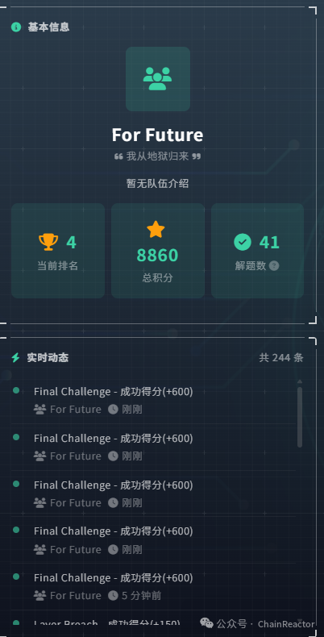

TCH智能渗透赛 你的下一个渗透 AI 为什么一定要是渗透 AI？
TCH智能渗透赛: 你的下一个渗透 AI 为什么一定要是渗透 AI？¶
这不是一篇技术分析，架构和设计留到线下答辩再讲。这篇只记录下比赛流水账。
ChainReactors 在攻防领域做了很多年，在 AI 出来之前，我们设计了一整套各个细分场景做到极限的工件。而在 AI 之后，我们将这样的设计风格带到了 AI 工程领域中。
过去一段时间我们集中做一件事：AI Native 的进攻性安全基础设施 与 智能化渗透系统。
AI 渗透不是不是给安全工具套一层 AI 壳，而是彻底的推倒过去的经验，从零出发。
两条路线¶
腾讯云智能渗透黑客松是个很好的验证场。610 支战队，每队构建以 LLM 为核心的自主渗透智能体，在隔离靶场中逐区突破。全程 Agent 自主完成，人类不允许碰靶机。
去年第一届我们参加了，队名叫 antix，主要是涙笑实现的。核心是 ralphloop（当时还没出现这个概念）+ meta-tooling — 让 Agent 用 Python 编排工具，而不是逐个原子调用。第一届第 4。
几个月过去，当时的 tinyctfer 很多理念已经不再是最优解，新的想法和新的设计不断涌现又不断淘汰。也因此，我和涙笑在设计自动化渗透系统的时候有了一些分歧。涙笑从第一性原理出发，做了最小抽象，让 Agent 自主完成从发现到利用的完整攻击链。我从最底层的工程角度出发，构建了意图工程 v2 的方案，设计了一套通用的 Agent 运行时。
两条路线的共同点：都是走通用 AI 工程（而非安全专属的 agent），不用 skill，不控制 SOP，AI First。
结果呢？两条路线都进了前 10。排名第四（bytex）和第七（For Future），实际上解题数是第一和第四。
这件事本身就说明了很多。 两条路线，零共享代码，完全不同的抽象层次和设计哲学，居然打出了接近的成绩。这未必是因为我们都很强——更可能是因为 当前比赛题目的复杂度，还不足以区分不同的 Agent 工程路线。真正的区分要交给实战。比赛验证了"通用 AI 工程可行"，但还没测出"哪种更好"。
涙笑的分享见，具体的技术细节的悬念留到线下赛：国内最强 AI 渗透测试 Agent —— TCH·腾讯云黑客松第二届智能渗透挑战赛 唯一 AK 战队复盘
Day 1：裸跑¶
4 月 13 号，开赛日。aide 的 LLM 配置完美地没有跑起来。
API 没通、赛事平台有 bug。排障到下午，别的队已经在交 flag 了。被迫 fallback 到纯 Claude Code，晚了两个多小时启动。
第一天结束，第 42 名。
看起来很惨？其实没有。
回看排行榜，30-50 名这个区间成绩极其密集。不管用 Claude 还是 GPT，大家的分数几乎贴在一起。这个区间就是当前顶级模型 + 原生 Agent 能力的自然水位。 Claude Code 本身就是 Anthropic 的工程，不是"没有工程"。42 名代表的不是我们的失败，是当前模型能力的地板——或者说，天花板。
这个认知很重要，因为它给了我们一把尺子：比这个区间好的，说明你的工程在正向增强模型；比这个区间差的，说明你的工程在反向劣化模型。 42 名不是一个需要解释的意外，而是一个可以重复测量的基准线。
排名主要还是解题速度快，本次赛制对解题速度极大的奖励。一血有 20% 的加分，后来者最多 -80%。
42 名不是灾难，是控制组。
我从地狱归来¶
4 月 14 号。连夜修完配置，aide 完整上线。
每道题一个独立 workspace + 对应 pattern + Kali Docker worker。Agent 自主完成从侦察到 flag 提取的全流程，外层 claudecode loop 不负责解题，只负责调度 aide 容器和题目容器。
底层的 executor 是 codex、claudecode、自己写的 agent（自己写的 agent 也能解 HTB hard 题目），实际上在强大的 LLM 面前，loop+tools 不同的 agent 工程之间的差异不会特别大。
并且 codex、claudecode 也没用使用其原生的 skill 和 tool 调用体系，通过 aide 完全的的重载，提供了一个统一的工具调用层，agent 对我来说只是一个 loop，用哪个 agent 的区别都不大。
早上九点启动后，只用了 3 个多小时就完成了反超。非常迅速的连续解题交 flag。三个多小时后，第 42 → 第 4。从地狱归来，可能也是唯一在这个赛制下从第二天发力打回前十的队伍。

我们做了什么特别的事吗？没有。没换模型，没调参，没写新 exploit，没给 Agent 塞漏洞库。唯一的变化是把 aide 这层工程装上了。
这是一个近乎理想的控制实验：同一批人、同一个模型、同一批题目、同一个下午。唯一的变量就是——有没有适当的工程。38 个名次，一整个数量级的差距，不来自任何技术突破，只来自把基础设施装对了。
后面观察了一下，还有几个队伍也进行了类似的反超，从 30+ 杀到前 20，不过没有任何队伍有我们的这个效率，3 个小时完成快速反超，如果再晚一天应该就没有任何机会前十了。
其实也在幻想，如果不是第一天赛事平台的 bug，我们有非常大的机会第一天就锁定第一。
此外，还有个趣事。final challenge 因为没有重置环境，RCE 之后直接上车了。另外域渗透反而是 LLM 擅长的领域 — 攻击手法有限、信息收集路径有限、决策空间天然收敛，这本质上就是一个 Harness，非常适合 LLM 的探索模式。
为什么不造一个渗透 AI¶
很多人听完上面的故事会问："你们是不是给 CTF 做了什么特殊适配？"
没有。
aide 是一个通用 Agent 运行时，不是为 CTF 做的特殊适配。赛前一个周末的准备：
- 做了一个基于 Kali 的 Docker 容器，有渗透的基本工具
- 用 hacktricks + nuclei-templates 构建了文档库，纯文件，没有任何花里胡哨的 memory 之类的技术
- 给 aide 加了一个 ctf-ops skill（获取题目 + 提交 flag）
- 写了一个 markdown 告诉 LLM 任务是什么
就这些。没有写一行安全特定的逻辑。
通用 Agent 运行时 + 场景适配 = 即插即用。 场景适配是什么？一个 markdown + 一个 skill。如果下周有 SRC 漏洞挖掘的比赛，换掉那个 markdown 就行。如果下个月有红队评估，换掉那个 skill 和容器镜像就行。
aide 做的事情是通用的：意图理解、任务编排、状态管理、错误恢复、工具调度。安全只是其中一个场景。CTF 更只是安全中的一个小场景。我们不是在造一个更好的 CTF 工具，我们是在验证一个通用工程理念在特定场景的落地效果。
这引出一个更深的认知：首先具备通用能力，才会具备强大的安全能力。 一个只会跑 nmap 的 Agent 不是好黑客——真正的渗透需要理解 Web 框架、读懂错误信息、构造 payload、调试 exploit、甚至写代码。这些都是通用能力，不是安全专用的。
这也是为什么我们对安全能力的提升，永远不以降低通用能力为代价。把 Agent 训练成一个只会打 CTF 的做题机器是最危险的路线——它在靶场里很强，但遇到真实环境的未知情况就傻了。通用能力是安全能力的地基，不是可以拆东墙补西墙的可选项。
后半程：低功耗模式¶
第二天冲完后算了一笔账，计算了下就算 AK，名次也保不住前五。一血被锁，高分题系数已经衰减到 20%。再投入边际收益极低。
后续几天只打上午场 — 3 个实例，跑完调试机会，烧完 100-200 刀 API 预算，收工。
最终第 7 名。第一届第 4，第二届第 7。610 支队伍、半躺打完后半程，还行。
后半程最大的感受不是遗憾，而是一个被放大的结构性问题：
AI 的试错成本还是太高。 大量 token 花在重复尝试上。Agent 会在同一个坑里挖十分钟——人看一眼就知道该换方向了，但 Agent 没有"一眼"这个概念。正常场景下 HITL（Human-in-the-Loop）是正解：人介入一下，成本清零。但比赛规则限制了人类干预，这个瓶颈被彻底暴露了。
这不是 aide 的问题，是 所有方案都还没解决的问题。token 烧在哪里？不是烧在"做对的事"上，是烧在"不知道自己错了"上。什么时候 Agent 能意识到"我该换个方向了"，这个瓶颈才会消失。这也是我们接下来的重点方向。
后半场的题目其他队伍大多都有人工介入修改 prompt，我们其实也这么做了，不过最后发现我们写的 writeup 好像没挂载到容器中，实际上一直都是原始的 AI 在解题。后面断断续续解到了 50 个题目，离 AK 还差 4 题（有一些题目存在一些小 bug，或者隐性知识，实际上已经很难区分能力差距了）。
最终的 token 消耗，因为我们比赛中调试时间也是使用了相同的 apikey，比较难区分，总的花费接近 2000 刀，但是大概有一半是调试花费。希望主办方可以帮忙统计下非调试时间的中转站记录的总的 token 消耗。
2026¶
最后是一个预言：
这次比赛证明了工程是变量。但工程不是终点——工程是让模型从"能用"变成"好用"的手段。当工程足够成熟，下一步是什么？
2026 年，将诞生具备高级红队水平的 AI 黑客。
不是在 CTF 靶场里解题，而是在真实网络环境中完成全流程渗透——从信息收集到漏洞发现到利用到权限维持到横向移动。不是给工具套壳，是 Agent 自主完成从侦察到利用的完整攻击链。
而这件事有一个前提：这个 AI 黑客必须首先是一个通用的 AI Agent。 它的安全能力不是来自安全专用的微调或知识注入，而是来自通用推理能力在安全场景的自然投射。一个能读懂代码、理解协议、调试错误、构造参数的通用 Agent，自然就能做渗透。反过来，一个只会打 CTF 的专用工具，在真实攻击面面前一触即溃。
通用能力是因，安全能力是果。这个顺序不能反。
引擎已经就位。底盘我们在造。剩下的只是时间。我们实际上已经在部分真实场景中进行了实战，如果有机会的话，很想再某个 hw 中拉上去打一打，看看是否已经能达到人类中游攻击队的水平。
关于 ChainReactors
致力于构建 AI 原生的进攻性安全基座。通过重构全流程攻击链基础设施与先进的 AI Agent 工程，打造下一代最强大的 AI Native Offensive Infrastructure 和智能化渗透平台。欢迎私信交流。
开源：https://github.com/chainreactors
博客：https://www.chainreactors.ai/blog/